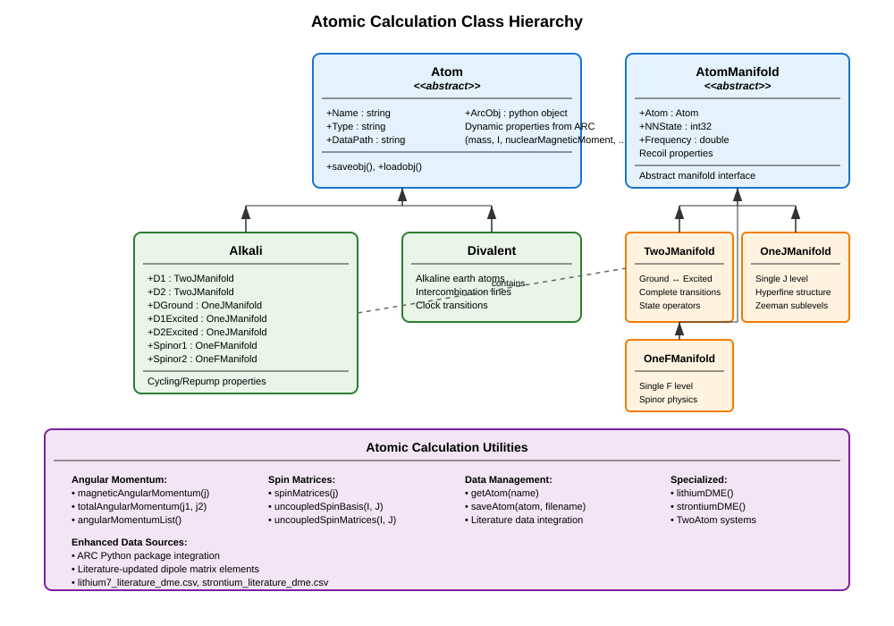

Atomic Property Calculation#
The atomic calculation framework in MuscleMuseum provides comprehensive tools for computing atomic structure, transition properties, and quantum mechanical operators for alkali and divalent atoms. Built upon the well-established ARC (Alkali Rydberg Calculator) Python package, it offers precise atomic data with enhanced accuracy for specific isotopes and transitions.
Overview#
The atomic framework enables detailed calculations of:
Atomic structure: Hyperfine manifolds, energy levels, and quantum numbers
Transition properties: Frequencies, linewidths, and dipole matrix elements
Magnetic interactions: Zeeman shifts and Landé \(g\)-factors
Optical properties: Saturation intensities, cross-sections, and polarizabilities
Quantum operators: Angular momentum matrices and state transformations
Recoil dynamics: Momentum transfer and temperature scales
The system supports both alkali atoms (Li, Na, K, Rb, Cs) and divalent atoms (Ca, Sr, Mg) with accurate experimental data integration.
Atomic Class Hierarchy#
{kind=link}

Core Atom Classes#
Atom Abstract Base#
The Atom abstract base class provides the foundation for all atomic calculations:
Key Properties:
Name: Atomic species identifier (e.g., “Lithium7”, “Rubidium87”)Type: Classification as “Alkali” or “Divalent”DataPath: Storage location for pre-calculated atomic dataDynamic Properties: All ARC atomic constants mirrored as MATLAB properties
ARC Integration:
% Automatic ARC integration
atom = Lithium7(); % Creates ARC object internally
% Access fundamental atomic properties
mass = atom.mass; % Atomic mass [kg]
nuclearSpin = atom.I; % Nuclear spin
magneticMoment = atom.nuclearMagneticMoment; % Nuclear magnetic moment
Data Management:
% Atomic data automatically cached for performance
dataPath = atom.DataPath; % ~/Documents/MMUser/atomData/
% Pre-calculated data includes:
% - State mapping tables
% - Transition matrix elements
% - Quantum operator matrices
Alkali Class#
The Alkali class specializes in alkali atom calculations with complete D-line manifold structure:
Manifold Properties:
D1: D1 transition manifold (\(J=1/2 \leftrightarrow J=1/2\))D2: D2 transition manifold (\(J=1/2 \leftrightarrow J=3/2\))DGround: Ground state manifold (\(L=0, J=1/2\))D1Excited: D1 excited manifold (\(L=1, J=1/2\))D2Excited: D2 excited manifold (\(L=1, J=3/2\))
Spinor Manifolds:
Spinor1: Lower hyperfine ground manifoldSpinor2: Upper hyperfine ground manifold
Transition Properties:
CyclerFrequency: Cycling transition frequency [Hz]CyclerSaturationIntensity: Cycling saturation intensity [W/m²]RepumperFrequency: Repump transition frequency [Hz]RepumperSaturationIntensity: Repump saturation intensity [W/m²]
Basic Usage:
% Create alkali atom
rb87 = Rubidium87();
% Access D-line properties
d2_freq = rb87.CyclerFrequency; % ~384 THz
d2_wavelength = rb87.D2.Wavelength; % ~780 nm
d2_linewidth = rb87.D2.NaturalLinewidth; % ~6 MHz
% Saturation intensities
isat_cycling = rb87.CyclerSaturationIntensity; % [W/m²]
isat_cycling_lu = rb87.CyclerSaturationIntensityLu; % [mW/cm²]
Cross-Section Calculations:
% Resonant absorption cross-section
sigma_cycling = rb87.CyclerCrossSection; % [m²]
sigma_repump = rb87.RepumperCrossSection; % [m²]
% Cross-section formula: σ = ℏωΓ/(2I_sat)
% where Γ is the natural linewidth
Divalent Class#
The Divalent class handles alkaline earth atoms with their unique electronic structure:
% Create divalent atom
sr88 = Strontium88();
% Access intercombination line properties
% (Implementation details depend on specific divalent structure)
AtomManifold System#
The manifold system provides detailed quantum state structure and operators for atomic calculations.
AtomManifold Base Class#
Fundamental Properties:
Atom: Parent atom contextNNState: Total number of quantum statesFrequency: Center-of-gravity transition frequency
Recoil Properties:
RecoilMomentum: \(p_r = \hbar k\) [kg·m/s]RecoilVelocity: \(v_r = p_r/m\) [m/s]RecoilEnergy: \(E_r/h\) [Hz]RecoilTemperature: \(T_r = 2 E_r h / k_B\) [K]
% Access recoil properties from any manifold
manifold = atom.D2;
recoil_momentum = manifold.RecoilMomentum; % [kg·m/s]
recoil_velocity = manifold.RecoilVelocity; % [m/s]
recoil_energy = manifold.RecoilEnergy; % [Hz]
recoil_temp = manifold.RecoilTemperature; % [K]
TwoJManifold Class#
Handles ground-excited state transitions with complete hyperfine structure:
Quantum Numbers:
Ground State: \(n_g, L_g, J_g, F_g, M_{F_g}\)
Excited State: \(n_e, L_e, J_e, F_e, M_{F_e}\)
State Lists and Operators:
d2 = atom.D2;
% Complete state information
stateList = d2.StateList; % Table with all quantum numbers
% State properties include:
% - Index: State identifier
% - F, MF: Hyperfine quantum numbers
% - Energy: Hyperfine energy [Hz]
% - gF: Landé g-factor
% Access specific states
groundStates = stateList(stateList.IsGround == true, :);
excitedStates = stateList(stateList.IsGround == false, :);
Quantum Operators:
% Angular momentum operators
Jx = d2.JOperator{1}; % Electronic angular momentum x-component
Jy = d2.JOperator{2}; % y-component
Jz = d2.JOperator{3}; % z-component
Ix = d2.IOperator{1}; % Nuclear angular momentum x-component
Iy = d2.IOperator{2}; % y-component
Iz = d2.IOperator{3}; % z-component
Fx = d2.FOperator{1}; % Total angular momentum x-component
Fy = d2.FOperator{2}; % y-component
Fz = d2.FOperator{3}; % z-component
Transition Properties:
% Linewidth and lifetime
gamma = d2.NaturalLinewidth; % [Hz]
lifetime = d2.LifetimeExcited; % [s]
% Dipole matrix elements
dme_reduced = d2.ReducedDipoleMatrixElement; % [C·m]
% Saturation intensity
isat_reduced = d2.ReducedSaturationIntensity; % [W/m²]
Specific Transition Analysis:
% Saturation intensity for specific transition
F_ground = 2; % Ground hyperfine state
mF_ground = 0; % Ground magnetic sublevel
F_excited = 3; % Excited hyperfine state
mF_excited = 0; % Excited magnetic sublevel
isat_specific = d2.SaturationIntensity(F_ground, mF_ground, F_excited, mF_excited);
Magnetic Field Interactions#
Zeeman Effect Calculations:
% Bias field Hamiltonian
magneticField = MagneticField(bias = [0; 0; 1e-4]); % 1 G along z
% Compute Zeeman Hamiltonian
H_zeeman = d2.HamiltonianAtomBiasField(magneticField);
% Diagonalize for dressed states
[eigenVecs, eigenVals] = eig(H_zeeman);
% Get dressed state table
[dressedStateTable, U] = d2.BiasDressedStateList(magneticField);
Landé g-Factor Calculations:
% Access g-factors for different states
gF_ground = d2.LandegFGround; % Hyperfine g-factors (ground)
gF_excited = d2.LandegFExcited; % Hyperfine g-factors (excited)
gJ_ground = d2.LandegJGround; % Electronic g-factors (ground)
gJ_excited = d2.LandegJExcited; % Electronic g-factors (excited)
Specialized Manifold Classes#
OneJManifold Class#
Single J manifold for ground or excited states:
% Ground state manifold
ground = atom.DGround;
% Hyperfine structure
F_values = ground.F; % Available F quantum numbers
energy_hfs = ground.Energy; % Hyperfine energies [Hz]
% Magnetic properties
gF_values = ground.LandegF; % Landé g-factors per F state
OneFManifold Class#
Single F manifold for spinor physics:
% Access spinor manifolds
spinor1 = atom.Spinor1; % Lower F manifold
spinor2 = atom.Spinor2; % Upper F manifold
% Spinor-specific calculations
% (Used for spinor BEC and quantum magnetism studies)
Utility Functions#
Angular Momentum Utilities#
% Generate magnetic quantum numbers
j = 3/2;
mj_list = magneticAngularMomentum(j); % [-3/2, -1/2, 1/2, 3/2]
% Total angular momentum coupling
j1 = 1/2; j2 = 1;
F_possible = totalAngularMomentum(j1, j2); % [1/2, 3/2]
Spin Matrix Generation:
% Generate spin matrices for arbitrary j
j = 1;
[Sx, Sy, Sz] = spinMatrices(j);
% Uncoupled spin basis transformations
basis = uncoupledSpinBasis(I, J);
transformation = uncoupledSpinBasisTransformation(I, J);
Atomic Data Management#
Species Loading:
% Load atomic species
atom = getAtom("Lithium7"); % Generic loader
atom = Lithium7(); % Direct constructor
% Save atomic calculations
saveAtom(atom, "myCalculations");
Literature Data Integration:
The framework includes enhanced atomic data:
Lithium-7: Updated dipole matrix elements from literature
Strontium: Intercombination line data
Custom data files: CSV format for additional isotopes
Data Validation:
% Verify atomic data consistency
% Check sum rules for matrix elements
% Validate energy level ordering
% Confirm transition selection rules
Advanced Calculations#
Multi-Atom Systems#
% Two-atom calculations
atom1 = Lithium7();
atom2 = Lithium7();
twoAtomSystem = TwoAtom(atom1, atom2);
% Inter-atomic interactions
% Collision cross-sections
% Feshbach resonances
Hyperfine Structure Analysis:
% Detailed hyperfine analysis
atom = Rubidium87();
% Hyperfine coefficients
A_ground = atom.DGround.HFSCoefficientA; % Magnetic dipole [Hz]
B_ground = atom.DGround.HFSCoefficientB; % Electric quadrupole [Hz]
% Energy level calculations
F_values = atom.DGround.F;
energies = atom.DGround.Energy;
% Hyperfine splitting
hfs_splitting = max(energies) - min(energies); % [Hz]
State-Specific Properties:
% Access properties for specific quantum states
stateList = atom.D2.StateList;
% Find specific state
target_state = stateList(stateList.F == 2 & stateList.MF == 0, :);
state_energy = target_state.Energy;
state_gF = target_state.gF;
Temperature and Energy Scales#
Doppler Cooling Limits:
% Doppler temperature
T_doppler = atom.D2.DopplerTemperature; % [K]
% Convert to other units
T_doppler_uK = T_doppler * 1e6; % [μK]
T_doppler_nK = T_doppler * 1e9; % [nK]
Recoil Energy Scales:
% Recoil energy for different transitions
Er_D1 = atom.D1.RecoilEnergy; % [Hz]
Er_D2 = atom.D2.RecoilEnergy; % [Hz]
% Recoil temperature
Tr_D2 = atom.D2.RecoilTemperature; % [K]
% Recoil velocity
vr_D2 = atom.D2.RecoilVelocity; % [m/s]
Energy Unit Conversions:
% Convert between energy units
energy_hz = 1e6; % 1 MHz
energy_joules = energy_hz * Constants.SI("hbar") * 2 * pi;
energy_kelvin = energy_joules / Constants.SI("kB");
energy_wavenumber = energy_joules / Constants.SI("hbar") / Constants.SI("c") / 2 / pi;
Transition Matrix Elements#
Dipole Matrix Elements:
% Reduced dipole matrix elements
d_D1 = atom.D1.ReducedDipoleMatrixElement; % [C·m]
d_D2 = atom.D2.ReducedDipoleMatrixElement; % [C·m]
% State-specific matrix elements
% <F',mF'|d·ε|F,mF> for specific polarization ε
Wigner-Eckart Theorem:
% Matrix elements factorize as:
% <F',mF'|T_q^k|F,mF> = (-1)^(F'-mF') *
% * wigner3j(F', k, F, -mF', q, mF)
% * <F'||T^k||F>
% Reduced matrix elements are state-independent
% Angular dependence from Wigner 3j symbols
Practical Applications#
Laser Cooling Calculations:
atom = Rubidium87();
% Doppler cooling limit
T_doppler = atom.D2.DopplerTemperature;
% Scattering rate calculation
laser_intensity = 1e3; % [W/m²]
saturation_intensity = atom.CyclerSaturationIntensity;
saturation_parameter = laser_intensity / saturation_intensity;
gamma = atom.D2.NaturalLinewidth * 2 * pi; % [rad/s]
scattering_rate = gamma * saturation_parameter / (1 + saturation_parameter);
Optical Molasses Analysis:
% Friction coefficient for optical molasses
k = atom.D2.AngularWavenumber;
beta = gamma * k^2 / 2; % Friction coefficient
% Capture velocity
v_capture = gamma / (2 * k);
Magnetic Trapping:
% Trappable states (positive μ·B interaction)
ground_states = atom.DGround.StateList;
trappable = ground_states(ground_states.gF > 0 & ground_states.MF > 0, :);
% Zeeman shift calculation
magnetic_field = 1e-4; % 1 G in Tesla
zeeman_shift = trappable.gF * Constants.SI("muB") * magnetic_field / Constants.SI("hbar") / 2 / pi;
Best Practices#
Data Accuracy: - Use updated literature values when available - Verify calculations against experimental measurements - Cross-check with multiple sources for critical parameters
Performance: - Cache expensive calculations for repeated use - Use pre-calculated manifold data when possible - Consider memory usage for large state spaces
Numerical Precision: - Use appropriate numerical precision for quantum calculations - Be aware of floating-point limitations in matrix diagonalization - Validate orthogonality and normalization of quantum states
Physical Validation: - Check that calculated properties match known experimental values - Verify energy level ordering and selection rules - Confirm that matrix elements satisfy sum rules
The atomic calculation framework provides the fundamental quantum mechanical foundation for all atom-light interactions in the MuscleMuseum system. Its integration with the established ARC database ensures accuracy while providing the flexibility needed for advanced AMO physics calculations.